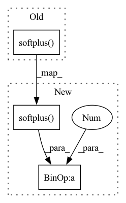

Pattern ID :22432

Before Change
if (loc is not None) and (scale is not None):
// total_count = (total_count * scale) + loc
probs += scale.log() / 10
total_count = F.softplus(total_count)
probs = F.sigmoid(probs)
return (total_count, probs)
// %% ../../nbs/losses.pytorch.ipynb 61
After Change
Also adds Negative Binomial domain protection to the distribution parameters.
mu, alpha = output
mu = F.softplus(mu) + 1e-8
alpha = F.softplus(alpha) + 1e-8 // alpha = 1/total_counts
if (loc is not None) and (scale is not None):
mu *= loc
alpha /= loc + 1.0
// mu = total_count * (probs/(1-probs))
// => probs = mu / (total_count + mu)
// => probs = mu / [total_count * (1 + mu * (1/total_count))]
total_count = 1.0 / alpha
probs = (mu * alpha / (1.0 + mu * alpha)) + 1e-8
return (total_count, probs)
// %% ../../nbs/losses.pytorch.ipynb 65
In pattern: SUPERPATTERN
Frequency: 4
Non-data size: 3
Instances
Fragment ID: 70947416
Project Name: nixtla/neuralforecast
Commit Name: 4821277708ea4584d61ae5c99e938efc34dc0bf5
Time: 2023-02-02
Author: kin.gtz.olivares@gmail.com
File Name: neuralforecast/losses/pytorch.py
M Class Name: AnonimousClass
N Class Name: AnonimousClass
M Method Name: nbinomial_scale_decouple(3)
N Method Name: nbinomial_scale_decouple(3)
M Parent Class:
N Parent Class:
M File Name: neuralforecast/losses/pytorch.py
N File Name: neuralforecast/losses/pytorch.py
M Start Line: 798
M End Line: 803
N Start Line: 873
N End Line: 884
'>
Before Change
// normalize mean
loc = loc / loc.norm(dim=-1, keepdim=True)
concentration = torch.nn.functional.softplus(log_concentration)
z = self._sample_von_mises(loc, concentration)
recon_x = self.decoder(z)["reconstruction"]
loss, recon_loss, kld = self.loss_function(recon_x, x, loc, concentration, z)
After Change
// normalize mean
loc = loc / loc.norm(dim=-1, keepdim=True)
concentration = torch.nn.functional.softplus(log_concentration) + 1
z = self._sample_von_mises(loc, concentration)
recon_x = self.decoder(z)["reconstruction"]
loss, recon_loss, kld = self.loss_function(recon_x, x, loc, concentration, z)
'>
Fragment ID: 70947411
Project Name: clementchadebec/benchmark_vae
Commit Name: a1a96c209d3b56f1c72d0409234169cf0b1c1e79
Time: 2022-08-20
Author: 47564971+clementchadebec@users.noreply.github.com
File Name: src/pythae/models/svae/svae_model.py
M Class Name: SVAE
N Class Name: SVAE
M Method Name: forward(2)
N Method Name: forward(2)
M Parent Class: VAE
N Parent Class: VAE
M File Name: src/pythae/models/svae/svae_model.py
N File Name: src/pythae/models/svae/svae_model.py
M Start Line: 85
M End Line: 85
N Start Line: 84
N End Line: 84
'>
Before Change
neg_weight = torch.max(torch.zeros_like(neg_weight), neg_weight)
lse_negative = torch.logsumexp(self.log_scale * (neg - self.neg_margin) * neg_weight, dim=-1)
loss = F.softplus(lse_positive + lse_negative) / self.log_scale
return torch.mean(loss), accuracy, furthest_positive.tolist(), average_negative.tolist(), 0, dists
After Change
lse_negative_row = torch.logsumexp(self.log_scale * (neg - self.neg_margin) * neg_weight, dim=-1)
lse_negative_col = torch.logsumexp(self.log_scale * (neg - self.neg_margin) * neg_weight, dim=-2)
loss_row = F.softplus(lse_positive + lse_negative_row) / self.log_scale
loss_col = F.softplus(lse_positive + lse_negative_col) / self.log_scale
loss = (loss_row + loss_col) / 2
return torch.mean(loss), accuracy, furthest_positive.tolist(), average_negative.tolist(), 0, dists
class DetLoss(nn.Module):
'>
Fragment ID: 70947412
Project Name: xuyangbai/d3feat.pytorch
Commit Name: 6b04056015be694539faaea65d814b508e6a265b
Time: 2020-07-17
Author: 653823597@qq.com
File Name: utils/loss.py
M Class Name: CircleLoss
N Class Name: CircleLoss
M Method Name: forward(4)
N Method Name: forward(4)
M Parent Class: nn.Module
N Parent Class: nn.Module
M File Name: utils/loss.py
N File Name: utils/loss.py
M Start Line: 144
M End Line: 159
N Start Line: 125
N End Line: 161
'>
Before Change
output = torch.nan_to_num(F.logsigmoid(pos_score), nan=0.0).sum(-1)\
/ notpadnum
return torch.mean(-output + \
torch.sum(F.softplus(neg_score) * weight, dim=-1))
else:
return torch.mean(-F.logsigmoid(pos_score) + \
F.softplus(torch.max(neg_score, dim=-1)))
After Change
weight = self._cal_weight(neg_score, log_neg_prob)
notpadnum = torch.logical_not(torch.isinf(pos_score)).float().sum()
output = torch.nan_to_num(F.logsigmoid(pos_score), nan=0.0).sum() / notpadnum
neg_score = F.softplus(neg_score) * weight
neg_score_sum = neg_score.sum(-1)
if pos_score.dim() == neg_score.dim()-1:
padding_mask = torch.isinf(pos_score)
neg_score_sum.masked_fill_(padding_mask, 0.0)
return -output + torch.mean(neg_score_sum)
'>
Fragment ID: 70947413
Project Name: ustcml/recstudio
Commit Name: d105308841df24997fabad0bcbe394d8ae46a729
Time: 2022-08-15
Author: angus_huang@mail.ustc.edu.cn
File Name: recstudio/model/loss_func.py
M Class Name: BinaryCrossEntropyLoss
N Class Name: BinaryCrossEntropyLoss
M Method Name: forward(6)
N Method Name: forward(6)
M Parent Class: PairwiseLoss
N Parent Class: PairwiseLoss
M File Name: recstudio/model/loss_func.py
N File Name: recstudio/model/loss_func.py
M Start Line: 93
M End Line: 99
N Start Line: 108
N End Line: 119